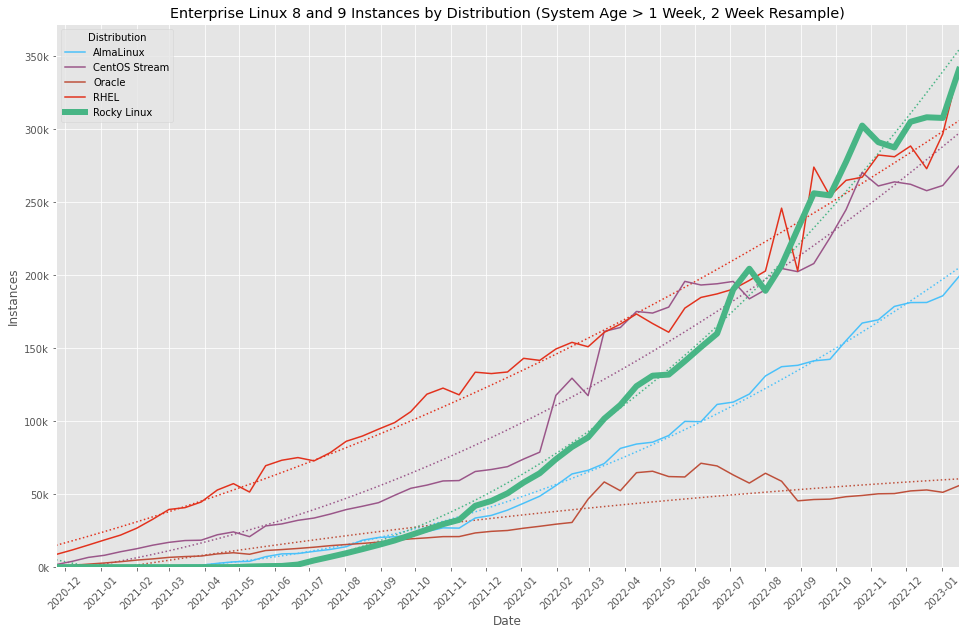
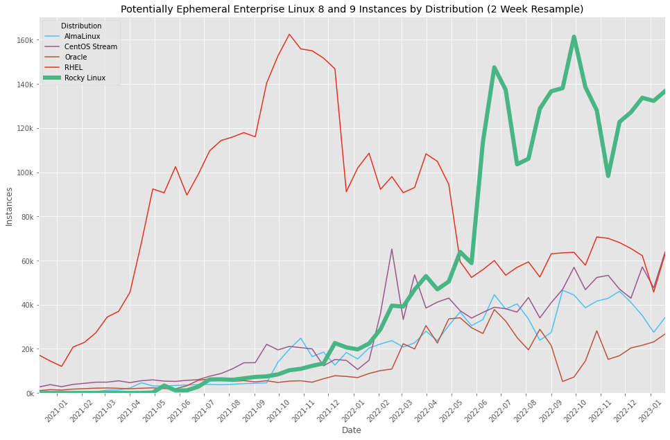
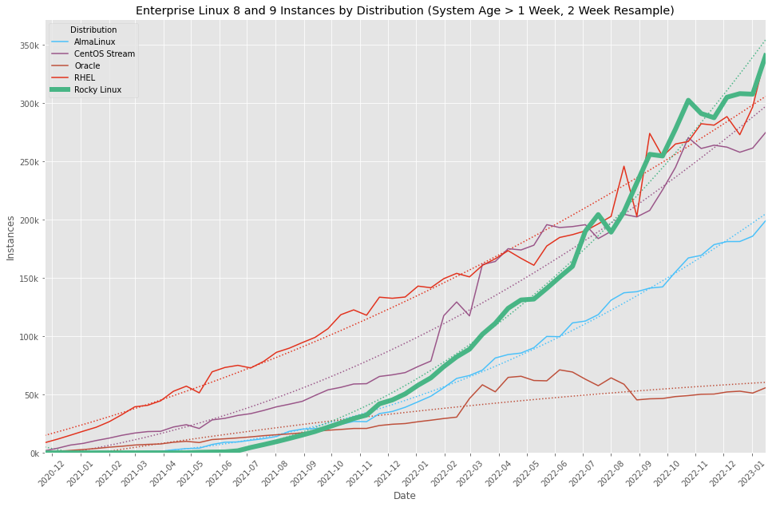
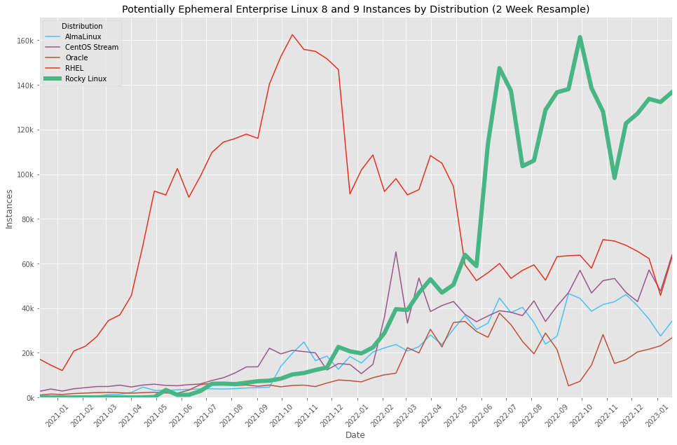

For an explanation on these charts, there's an article here
These are last known good charts. Automatic updates are here

 





These images are licensed under a Creative Commons Attribution 4.0 International License. Feel free to share!